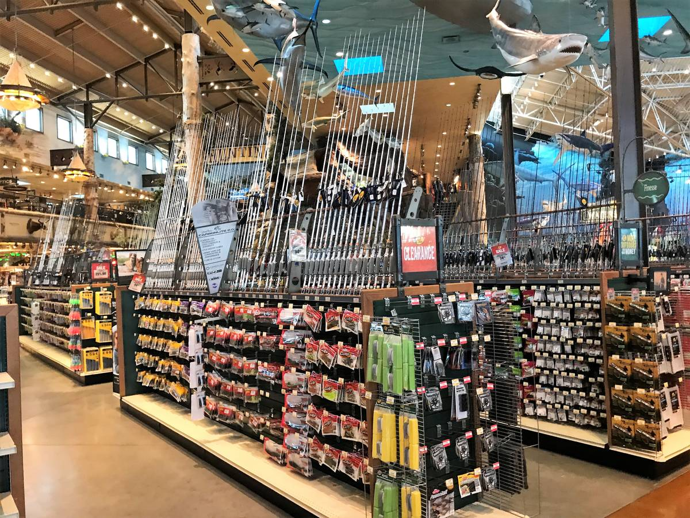

- Rapala
- Johnsons Silver Minnow
- flatfish
- Wacky worm
- Gulp plastic worm
List of our top selling lures:
The Turville’s Fishing and Tackle shop was built in April of 2021. We are a fairly new company, but our owners have over 22 years of fishing experience. On this site you can find the best lures for many different types of fish. You can also purchase these lures from our secure online shop. Don’t forget to sign up with our rewards program as well! Feel free to ask us any questions you may have.
Contact us
